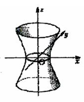

7.5.2.1. Однополостный гиперболоид

Однополостным гиперболоидом называется поверхность
второго порядка с каноническим уравнением
 Каноническое уравнение однополосного гиперболоида
.
Каноническое уравнение однополосного гиперболоида
.Линия пересечения гиперболоида и плоскости  задается системой уравнений:
задается системой уравнений:
задается системой уравнений:определяющей эллипс с полуосями  и
и
 .
.
и
.В сечении плоскостью  имеем
эллипс
имеем
эллипс  с полуосями и
с полуосями и
имеем
эллипс с полуосями и
Сечение поверхности  плоскостью
плоскостью
 : является
гиперболой с действительной осью
: является
гиперболой с действительной осью  и мнимой осью
и мнимой осью  . Сечение плоскостью
. Сечение плоскостью
 - гипербола с действительной осью
- гипербола с действительной осью  и мнимой осью
и мнимой осью
плоскостью
: является
гиперболой с действительной осью и мнимой осью . Сечение плоскостью
- гипербола с действительной осью и мнимой осью При получается однополостный
гиперболоид вращения.
Покажем, что однополостный гиперболоид также является
линейчатой поверхностью, для чего перепишем уравнение в виде
.
Рассмотрим две системы линейных уравнений
где  и
и  –
параметры, не равные нулю. Каждая из этих систем определяет прямую (линию
пересечения двух плоскостей). Если перемножить уравнения каждой системы, получится
уравнение однополостного гиперболоида, откуда следует, что каждая из этих прямых
целиком лежит на однополостном гиперболоиде. Таким образом, через каждую точку
однополостного гиперболоида проходят две прямые, называемые прямолинейными
образующими однополостного гиперболоида, он имеет два семейства
прямолинейных образующих.
–
параметры, не равные нулю. Каждая из этих систем определяет прямую (линию
пересечения двух плоскостей). Если перемножить уравнения каждой системы, получится
уравнение однополостного гиперболоида, откуда следует, что каждая из этих прямых
целиком лежит на однополостном гиперболоиде. Таким образом, через каждую точку
однополостного гиперболоида проходят две прямые, называемые прямолинейными
образующими однополостного гиперболоида, он имеет два семейства
прямолинейных образующих.
и –
параметры, не равные нулю. Каждая из этих систем определяет прямую (линию
пересечения двух плоскостей). Если перемножить уравнения каждой системы, получится
уравнение однополостного гиперболоида, откуда следует, что каждая из этих прямых
целиком лежит на однополостном гиперболоиде. Таким образом, через каждую точку
однополостного гиперболоида проходят две прямые, называемые прямолинейными
образующими однополостного гиперболоида, он имеет два семейства
прямолинейных образующих.Русский инженер В.Г. Шухов предложил использовать
линейчатый характер однополостного гиперболоида в строительной технике. Он
предложил конструкции из металлических балок, расположенных так, как
расположены прямолинейные образующие однополостного гиперболоида вращения.
Такие конструкции оказались легкими и прочными, они используются для устройства
водонапорных башен и радиомачт.